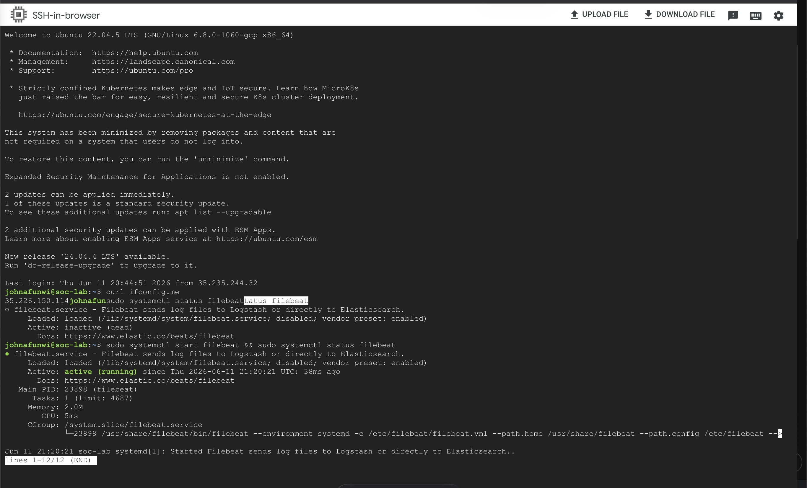

Home SOC Lab: ELK Stack SIEM on Google Cloud Platform
Deployed a fully functional SIEM environment on a Google Cloud Platform VM using Docker containers. Configured Filebeat to ingest Linux authentication logs in real time into Elasticsearch. Used Kibana to detect and investigate a live SSH brute force attack, tracing the attacker to Jakarta, Indonesia via threat intelligence lookup.
Key findings: 706+ brute force attempts detected, attacker IP 43.133.148.170 identified as Tencent-hosted infrastructure in Indonesia.
